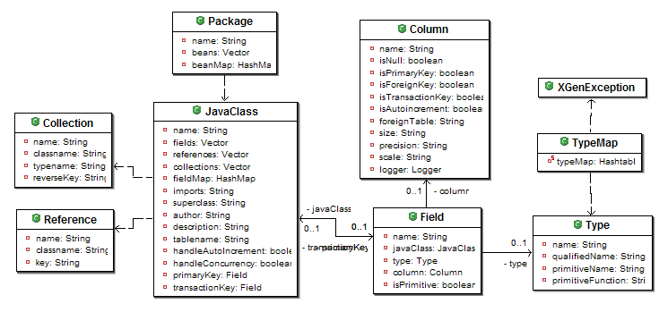

The JavaModelLoader returns a workzen.xgen.model.Package class that encapsulates a standard "Java" object oriented model. It provides accessors to all OO elements: classes, attributes, contained objects and references.
The xml input file contains information about Java classes and the associated SQL column information. The format of the file is very close to the JDO file format, using a package=>class=>field format. See xml schema example.
<package name="test">
<class name="Person">
<field name="firstName">
The Package model can then be used to generate JDBC persistence code. This package can also be used to generate it original XML schemas. This makes it possible to define classes in XGen and transform them into xml definition files for other persistence engines!
